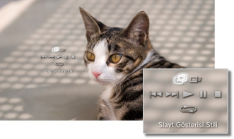

Fotoğraf > Görüntüleri slayt gösterisi olarak görüntüleme
Görüntüleri slayt gösterisi olarak görüntüleme
Her görüntü otomatik olarak sırayla görüntülenir. Görüntüler içeren bir klasör veya ortamın simgesini seçtikten sonra ve START (Başlat) düğmesine basınca slayt gösterisi başlar.
İpuçları
- Slayt gösterisi bir görüntü için kontrol panelinden veya seçenekler menüsünden de başlatılabilir.
- Slayt gösterisi START (Başlat) düğmesine basılarak başlatılamazsa, bu işlemi kontrol panelinden gerçekleştirin.
Slayt gösterisi kontrol panelini kullanma
Bir slayt gösterisi sırasında  düğmesine bastıktan sonra, kontrol paneli görüntülenecektir.
düğmesine bastıktan sonra, kontrol paneli görüntülenecektir.

| Slayt Gösterisi Stili | Beş slayt gösterisi ekran şablonundan birini seçin. | |
|---|---|---|
 |
Slayt Gösterisi Hızı | Üç slayt gösterisi hızından birini seçin: [Hızlı] > [Normal] > [Yavaş]. |
 |
Önceki | Önceki görüntüye gider. |
 |
Sonraki | Sonraki görüntüye gider. |
 |
Oynat | Slayt gösterisini başlatır. |
 |
Duraklat | Slayt gösterisini duraklatır. |
 |
Durdur | Slayt gösterisini durdurur. |
 |
Tekrarla | Slayt gösterisini tekrar tekrar oynatır. |
İpucu
(Slayt Gösterisi Stili), [Fotoğraf Albümü] veya [Fotoğraf Albümü 2] olarak ayarlandığında, görüntü boyutunu büyütmek veya küçültmek ya da slayt gösterisi hızını ayarlamak gibi işlevleri çalıştırmak için SIXAXIS™ kablosuz kumandanın sağ çubuğunu kullanın.
Müzik çalarken slayt gösterisi oynatma
Aynı anda bir slayt gösterisini oynatabilir veya müzik çalabilirsiniz.
1. |
|
|---|---|
2. |
PS düğmesine basın. |
3. |
|
 (Müzik) altından müzik çalmayı başlatın.
(Müzik) altından müzik çalmayı başlatın. (Fotoğraf) öğesine gidin, slayt gösterisinde görüntülemek istediğiniz görüntüleri veya klasörü seçin ve sonra START (Başlat) düğmesine basın.
(Fotoğraf) öğesine gidin, slayt gösterisinde görüntülemek istediğiniz görüntüleri veya klasörü seçin ve sonra START (Başlat) düğmesine basın.İpuçları
- Eşzamanlı oynatma sırasında PS düğmesine basarsanız, XMB™ menüsü görüntülenir ve müzik veya görüntüleri değiştirebilirsiniz.
- Çıkmak için, slayt gösterisi oynatmayı ve müzik çalmayı ayrı ayrı durdurmanız gerekir. Herhangi birini durdurduktan sonra, oynatılmakta olan parçayı veya görüntüyü seçin ve oynatmayı durdurun.
- Bir super audio CD'yi slayt gösterisiyle aynı zamanda çalamazsınız.
 (Ayarlar) >
(Ayarlar) >  (Müzik Ayarları) > [Çıkış Frekansı] öğesi [44.1/88.2/176.4 kHz] olarak ayarlanırsa, müzik içeriğini slayt gösterisiyle aynı zamanda çalamazsınız.
(Müzik Ayarları) > [Çıkış Frekansı] öğesi [44.1/88.2/176.4 kHz] olarak ayarlanırsa, müzik içeriğini slayt gösterisiyle aynı zamanda çalamazsınız.
Uyarı
Super Audio CD'ler bazı PS3™ sistemlerinde oynatılamazlar. Ayrıntılar için, bkz. [Oynatılabilir Disk Türleri].